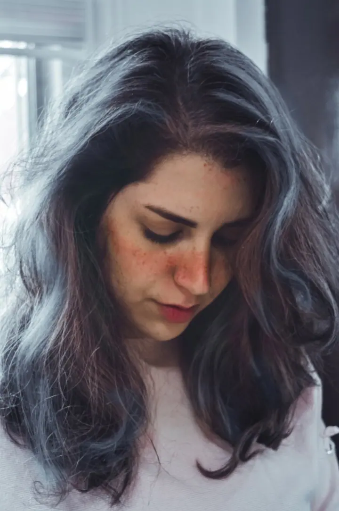
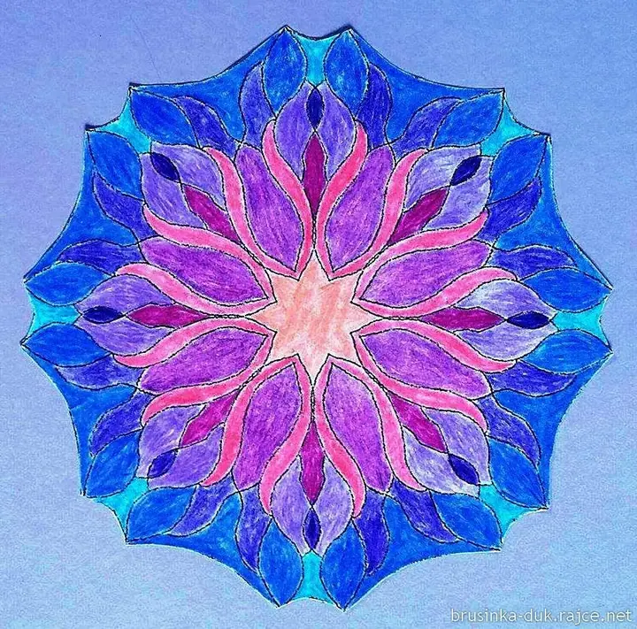
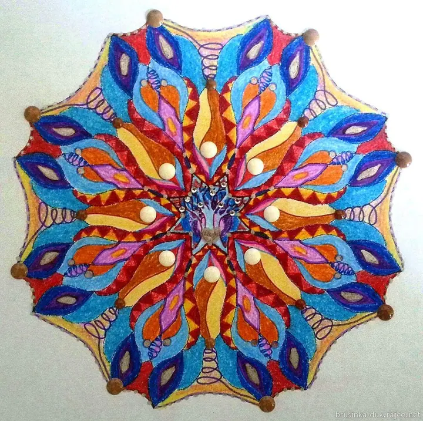
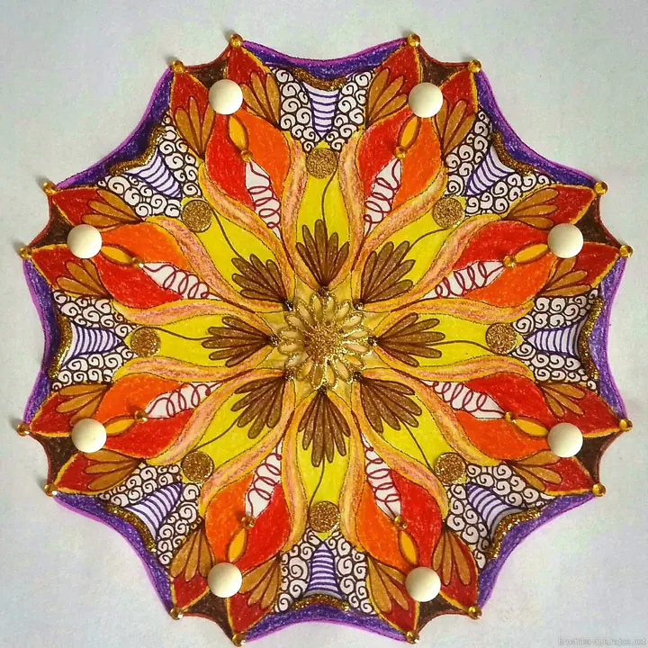

01 / 02
Sešity mandal k vybarvení
Mandaly k vybarvení vydávám v sešitech pod značkou Atelier HABR. Stačí si vybrat předlohu a vzít pastelky.
Zeptat se na termín→





Mandaly, které ožívají barvami
Zeptat se na termín →(01) Ahoj
Jmenuji se Helena Brousková a v Atelieru HABR připravuji mandaly k vybarvení. Vydávám je v sešitech , aby si je mohl vybarvit každý, děti i dospělí. Z našich akcí pak sdílím fotky, videa a hlavně barevné mandaly , které při nich vznikají.
(02) Co fotím
01 / 02
Mandaly k vybarvení vydávám v sešitech pod značkou Atelier HABR. Stačí si vybrat předlohu a vzít pastelky.
Zeptat se na termín→02 / 02
Na akcích ateliéru vybarvují mandaly děti i dospělí. Fotky a videa z nich pak sdílím ve svém albu.
Zeptat se na termín→(03) Portfolio
Kliknutím fotku zvětšíte · fotografie jsou ilustrační
(04) Postup
Od první zprávy po hotovou galerii.
Krok 1 z 4
Z mých sešitů si zvolte mandalu, která vás zaujme. Jednodušší i hodně členité tvary najdete v každém sešitě.
Krok 2 z 4
Stačí pastelky a chvíle klidu. Barvy si vybíráte úplně sami, žádná správná kombinace neexistuje.
Krok 3 z 4
Postupujte od středu, nebo od okraje, jak vám to vyhovuje. Mandala vznikne podle vaší nálady.
Krok 4 z 4
Hotové mandaly z akcí ateliéru ukazuji ve fotogalerii. Každá je jiná a v tom je ta krása.

Každá mandala se dá vybarvit po svém.
(05) Za objektivem
Atelier HABR je místo, kde se potkávají lidé, kteří rádi tvoří. Základem jsou mandaly, tedy kruhové předlohy, které si každý vybarví po svém.
Předlohy vydávám v sešitech mandal k vybarvení. Stejná kresba pokaždé dopadne jinak, u někoho v ohnivých barvách, u jiného v jemných pastelových tónech.
Na akcích ateliéru vybarvují malí i velcí. Fotky a videa z nich ukládám do alba, ať se na hotové mandaly můžete podívat i vy.
Helena
Helena Brousková · Ateliér mandal k vybarvení
Pro děti i dospělé. Na mandalách z akcí ateliéru pracovali školáci i lidé kolem třiceti a čtyřiceti let.
Napište mi e-mail nebo zavolejte a domluvíme se, jak sešit dostanete.
Aktuální termíny a místa vám ráda sdělím e-mailem nebo po telefonu.
Vůbec ne. Předloha je připravená, vy jen vybíráte barvy a vybarvujete.
(07) Kontakt
Napište pár vět o tom, co si představujete, a termín, který se vám hodí.
d.u.klub@volny.cz